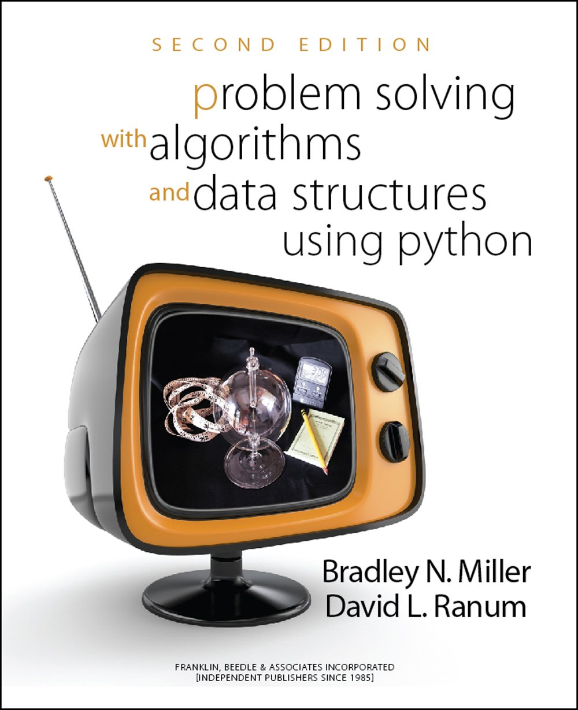
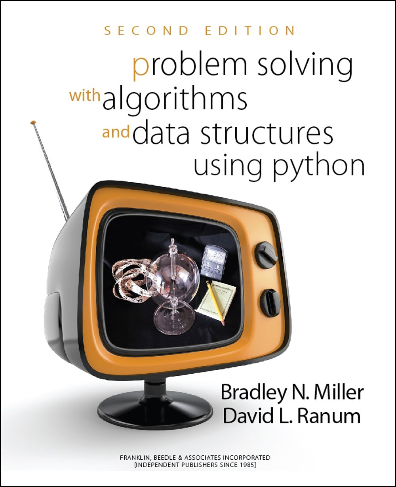

Python Programming
Lecture 13 Web Api
13.1 Encoding
Encoding
filename = 'Harry Potter.txt'
with open(filename, encoding="utf-8") as f_obj:
contents = f_obj.read()
Character Encoding: ASCII, Unicode, UTF-8, GBK
- Two-dimensional code, QR code
import qrcode
img=qrcode.make("Hello!")
img.save("x.png")
import qrcode
img=qrcode.make("https://wangwanglulu.com/")
img.save("wl.png")
13.2 Web Api
Web Api
import requests
url = "http://t.weather.itboy.net/api/weather/city/101020100"
r = requests.get(url)
print(r.status_code)
response_dict = r.json()
f = response_dict['data']
ff = f['forecast']
ff_today = ff[0]
ff_1 = ff[1]
ff_2 = ff[2]
def show(day):
for x in day:
print(x+': '+str(day[x]))
print()
show(ff_today)
show(ff_1)
show(ff_2)
ChatGpt
import openai
openai.api_key = "Your API KEY"
messages = [ {"role": "system", "content":
"You are a intelligent assistant."} ]
while True:
message = input("User : ")
if message:
messages.append(
{"role": "user", "content": message},
)
chat = openai.ChatCompletion.create(
model="gpt-3.5-turbo", messages=messages
)
reply = chat.choices[0].message.content
print(f"ChatGPT: {reply}")
messages.append({"role": "assistant", "content": reply})
GitHub
https://api.github.com/search/repositories?q=language:python&sort=stars
url = 'https://api.github.com/search/repositories?q=language:python&sort=stars'
import requests
# Make an API call and store the response.
r = requests.get(url)
print("Status code:", r.status_code)
# Store API response in a variable.
response_dict = r.json()
for keys in response_dict.keys():
print(keys)
Status code: 200
total_count
incomplete_results
items
Timeouts and incomplete results
To keep the REST API fast for everyone, we limit how long any individual query can run. For queries that exceed the time limit, the API returns the matches that were already found prior to the timeout, and the response has the incomplete_results property set to true. Reaching a timeout does not necessarily mean that search results are incomplete. More results might have been found, but also might not.
- Working with the Response Dictionary
# continue
print("Total repositories:", response_dict['total_count'])
# Explore information about the repositories.
repo_dicts = response_dict['items']
print("Repositories returned:", len(repo_dicts))
# Examine the first repository.
repo_dict = repo_dicts[0]
print("\nKeys:", len(repo_dict))
Status code: 200
Total repositories: 10633864
Repositories returned: 30
Keys: 80
print("\nSelected information about first repository:")
print('Name:', repo_dict['name'])
print('Owner:', repo_dict['owner']['login'])
print('Stars:', repo_dict['stargazers_count'])
print('Repository:', repo_dict['html_url'])
print('Created:', repo_dict['created_at'])
print('Updated:', repo_dict['updated_at'])
print('Description:', repo_dict['description'])
Selected information about first repository:
Name: youtube-dl
Owner: ytdl-org
Stars: 120354
Repository: https://github.com/ytdl-org/youtube-dl
Created: 2010-10-31T14:35:07Z
Updated: 2023-05-17T13:04:03Z
Description: Command-line program to download videos from YouTube.com
and other video sites
- Visualizing Repositories Using Plotly
import requests
from plotly.graph_objs import Bar
from plotly import offline
URL = 'https://api.github.com/search/repositories?q=language:python&sort=star'
r = requests.get(URL)
print("Status code:", r.status_code)
response_dict = r.json()
repo_dicts = response_dict['items']
names, stars = [], []
for repo_dict in repo_dicts:
names.append(repo_dict['name'])
stars.append(repo_dict['stargazers_count'])
- Make visualization
data = [{
'type': 'bar',
'x': names,
'y': stars,
}]
my_layout = {
'title': 'Most-Starred Python Projects on GitHub',
'xaxis': {'title': 'Repository'},
'yaxis': {'title': 'Stars'},
}
fig = {'data': data, 'layout': my_layout}
offline.plot(fig, filename='python_repos.html')
Where to find Web Api? Public APIs, 聚合数据
IMDb-API
import requests
api_key = 'Your API Key'
url=f"https://imdb-api.com/en/API/Top250Movies/{api_key}"
r = requests.get(url)
print(r.status_code)
response_dict = r.json()
top250 = response_dict["items"]
print(top250[0])
{'id': 'tt0111161', 'rank': '1', 'title': 'The Shawshank Redemption',
'fullTitle': 'The Shawshank Redemption (1994)', 'year': '1994', 'image':
'https://m.media-amazon.com/images/M/MV5BNDE3ODcxYzMtY2YzZC00NmNlLWJiNDMtZD
ViZWM2MzIxZDYwXkEyXkFqcGdeQXVyNjAwNDUxODI@._V1_Ratio0.6716_AL_.jpg',
'crew': 'Frank Darabont (dir.), Tim Robbins, Morgan Freeman',
'imDbRating': '9.2', 'imDbRatingCount': '2739500'}
Downloading Images
import requests
url="https://m.media-amazon.com/images/\
M/MV5BNDE3ODcxYzMtY2YzZC00NmNlLWJiNDMtZ\
DViZWM2MzIxZDYwXkEyXkFqcGdeQXVyNjAwNDUx\
ODI@._V1_Ratio0.6716_AL_.jpg"
r = requests.get(url)
if r.status_code == 200:
with open('The Shawshank Redemption.jpg', 'wb') as f:
f.write(r.content)
else:
print("download failed")
Top10
import requests
api_key = 'Your API Key'
url=f"https://imdb-api.com/en/API/Top250Movies/{api_key}"
r = requests.get(url)
print(r.status_code)
response_dict = r.json()
top250 = response_dict["items"]
top10 = top250[:10]
print(top10)
for movie in top10:
url = movie['image']
title = movie['title']
r = requests.get(url)
if r.status_code == 200:
with open(f'{title}.jpg', 'wb') as f:
f.write(r.content)
else:
print("download failed")
In Theaters
import requests
api_key = 'Your API Key'
url=f"https://imdb-api.com/en/API/InTheaters/{api_key}"
r = requests.get(url)
print(r.status_code)
response_dict = r.json()
in_theaters = response_dict["items"]
for movie in in_theaters:
url = movie['image']
title = movie['title']
print(title)
r = requests.get(url)
if r.status_code == 200:
with open(f'{title}.jpg', 'wb') as f:
f.write(r.content)
else:
print("download failed")
Where to find Web Api? Public APIs, 聚合数据
TMDB-API
import requests
api_access = 'Your API Key'
page = 1
url = f"https://api.themoviedb.org/3/movie/\
top_rated?language=en-US&page={page}"
headers = {
"accept": "application/json",
"Authorization": f"Bearer {api_access}"
}
response = requests.get(url, headers=headers)
response_dict = response.json()
# print(response_dict)
movies=response_dict["results"]
print(movies[0])
for key, value in movies[0].items():
print(f"{key}: {value}")
adult: False
backdrop_path: /tmU7GeKVybMWFButWEGl2M4GeiP.jpg
genre_ids: [18, 80]
id: 238
original_language: en
original_title: The Godfather
overview: Spanning the years 1945 to 1955, a chronicle of the fictional
Italian-American Corleone crime family. When organized crime family
patriarch, Vito Corleone barely survives an attempt on his life, his
youngest son, Michael steps in to take care of the would-be killers,
launching a campaign of bloody revenge.
popularity: 104.261
poster_path: /3bhkrj58Vtu7enYsRolD1fZdja1.jpg
release_date: 1972-03-14
title: The Godfather
video: False
vote_average: 8.7
vote_count: 17922
Downloading Images
poster = movies[0]['poster_path']
img_url = f"https://image.tmdb.org/t/p/w500{poster}"
r = requests.get(img, headers=headers)
if r.status_code == 200:
with open('The Godfather.jpg', 'wb') as f:
f.write(r.content)
else:
print("download failed")
Top10
import requests
api_access = 'Your API Key'
page = 1
url = f"https://api.themoviedb.org/3/movie/\
top_rated?language=en-US&page={page}"
headers = {
"accept": "application/json",
"Authorization": f"Bearer {api_access}"
}
response = requests.get(url, headers=headers)
response_dict = response.json()
movies=response_dict["results"]
top10 = movies[:10]
for movie in top10:
poster = movie['poster_path']
title = movie['title']
img_url = f"https://image.tmdb.org/t/p/w500{poster}"
r = requests.get(img_url, headers=headers)
if r.status_code == 200:
with open(f'{title}.jpg', 'wb') as f:
f.write(r.content)
else:
print("download failed")
Now Playing
import requests
api_access = 'Your API Key'
page = 1
url = f"https://api.themoviedb.org/3/movie/\
now_playing?language=en-US&page={page}"
headers = {
"accept": "application/json",
"Authorization": f"Bearer {api_access}"
}
response = requests.get(url, headers=headers)
response_dict = response.json()
movies=response_dict["results"]
top10 = movies[:10]
for movie in top10:
poster = movie['poster_path']
title = movie['title']
img_url = f"https://image.tmdb.org/t/p/w500{poster}"
r = requests.get(img_url, headers=headers)
if r.status_code == 200:
with open(f'{title}.jpg', 'wb') as f:
f.write(r.content)
else:
print("download failed")
Stock Market (股票市场)
url="http://img1.money.126.net/data/hs/kline/day/history/2022/1399001.json"
- 代码为股票代码，上海股票前加0，如600756变成0600756，深圳股票前加1
- 大盘指数数据查询：上证指数000001前加0，沪深300指数000300股票前加0，深证成指399001前加1，中小板指399005前加1，创业板指399006前加1
- 是否复权，不复权为kline，复权为klinederc
贵州茅台
import requests
import matplotlib.pyplot as plt
url="http://img1.money.126.net/data/hs/kline/day/history/2022/0600519.json"
r = requests.get(url)
print(r.status_code)
response_dict = r.json()
print(response_dict)
13.3 Textbook
-
Python Crash Couse (Chapters we do not cover: Chapter 12 - 14, 18 - 20)
-
Chapter 11: Testing Your Code
-
Chapter 12 -14: Alien Invasion
-
Chapter 18 - 20: Django
-
-
Python for Everybody (Chapters we do not cover: Chapter 11 - 13, 15 - 16)
-
Chapter 11: Reguler Expressions
-
Chapter 12: Networked Programs 12.4 - 12.8 (urlib, BeautifulSoup)
-
Chapter 13: Using Web Services (XML, JSON, API)
-
Chapter 15: Databases and SQL
-
Chapter 16: Visualizing data (Network, Word Cloud)
-
 

Summary
- Web Api
- Reading: Python Crash Course, Chapter 17